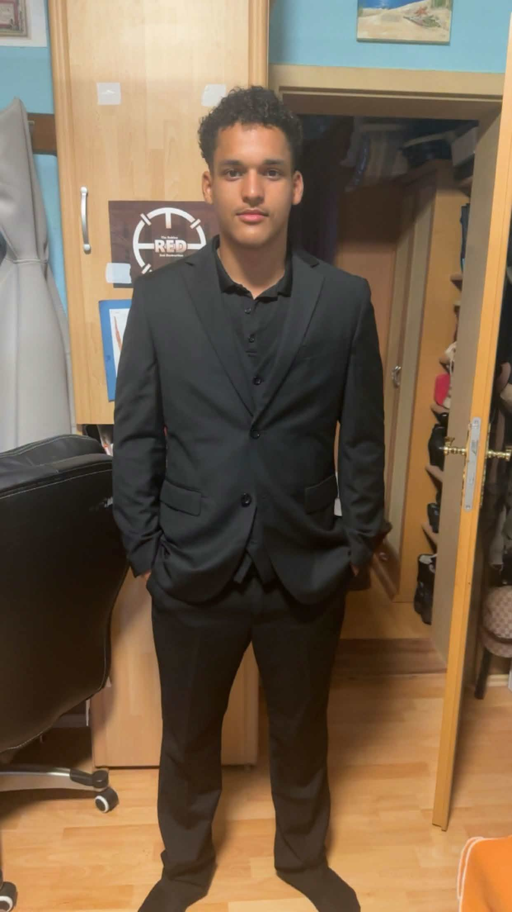

Ich interessiere mich für Softwareentwicklung und Informationstechnologie. Zurzeit erweitere ich meine Kenntnisse in HTML, CSS, Java und Python durch eigenständiges Lernen und praktische Projekte. Mein Ziel ist es, mich fachlich weiterzuentwickeln und wertvolle Praxiserfahrung im IT-Bereich zu sammeln.

Schon früh habe ich mich für Computer und digitale Technologien interessiert. Besonders spannend finde ich die Verbindung von Informationstechnologie und Wirtschaft, weshalb ich später Wirtschaftsinformatik studieren möchte. Durch eigene Projekte vertiefe ich meine Programmierkenntnisse und entwickle mich Schritt für Schritt weiter. Mir ist es wichtig, Neues zu lernen und praktische Erfahrungen zu sammeln.
Aktuell eigne ich mir Kenntnisse in HTML, CSS, Java und Python im Selbststudium an. Das Gelernte setze ich direkt in kleinen Projekten um, um meine Fähigkeiten kontinuierlich zu verbessern und praktische Erfahrungen zu sammeln.
Ich arbeite zuverlässig, bin motiviert Neues zu lernen und freue mich darauf, mein Wissen in einem professionellen Unternehmen weiter auszubauen. Mein Ziel ist es, langfristig als Softwareentwickler tätig zu sein und mich fachlich stetig weiterzuentwickeln.
★★☆☆☆ – Grundkenntnisse (derzeit im Selbststudium)
★★☆☆☆ – Grundkenntnisse (lerne kontinuierlich weiter)
★★★☆☆ – Gute Grundlagen
★★☆☆☆ – Grundlagen
Entwicklung einer eigenen Portfolio-Website mit HTML und CSS zur Präsentation meiner Kenntnisse und Projekte.
Kleines Python-Programm zur Erstellung sicherer Zufallspasswörter mit individuell wählbarer Länge.
Konsolenprogramm zur Berechnung eines Notendurchschnitts anhand mehrerer eingegebener Schulnoten.
Vielen Dank für Ihren Besuch auf meiner Portfolio-Website. Ich freue mich über Anfragen zu Praktika, Ausbildungsplätzen oder spannenden IT-Projekten.
📧 cristian.pritsch1@gmail.com
📱 +49 151 56607231
📍 Berlin, Deutschland
E-Mail schreiben